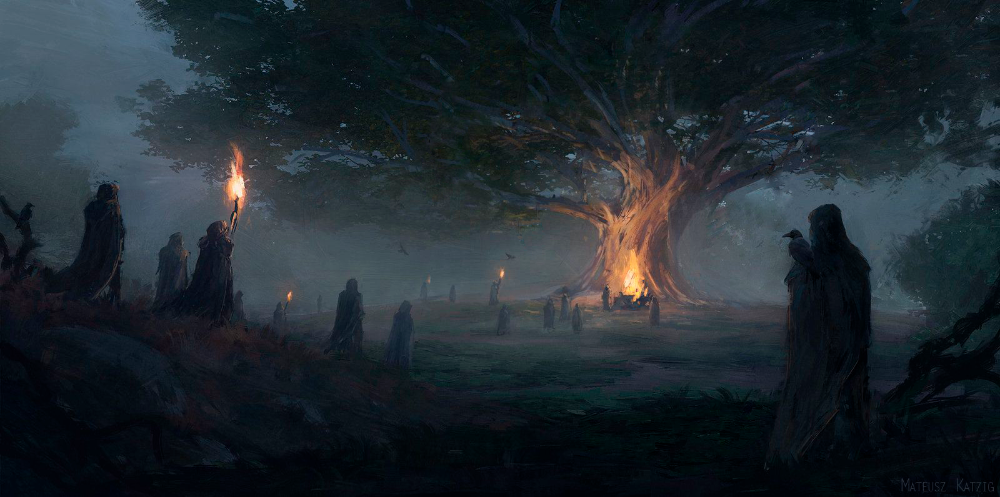

🏕️ Лес Крея
Запретный лес

Население: Неизвестно
Правитель: Нет (под контролем древних сил)
Основан: Эпоха до королевств
Описание
Лес "Крея" - запретный лес, охраняемый древней магией. Вход в него разрешен лишь в сопровождении могущественных волшебников или друидов.
История
В давние времена, когда мир ещё не знал королевских знамён и каменных стен, на этих землях раскинулся лес, чьё имя произносили шёпотом — Крея. Не было места древнее и страшнее. Под его сомкнутыми кронами, куда не проникал даже солнечный свет, обитали энды и живые деревья — исполины, чьи корни пили воду из самых глубин земли, а ветви касались небес.
Крея не знала чужаков. Всякий, кто осмеливался переступить его границу, встречал лишь смерть: тропы сворачивались в кольца, тени оживали, а шёпот листвы становился последней колыбельной для заблудших. Живые деревья не ведали пощады — они были стражей и судьёй в одном лице. Лишь единицам, кого древние силы признавали своими, удавалось выйти из Креи живыми.
Достопримечательности
- Лагерь ордена 4 волшебников
- Рунический лагерь друидов
- Тропы, сворачивающиеся в кольца